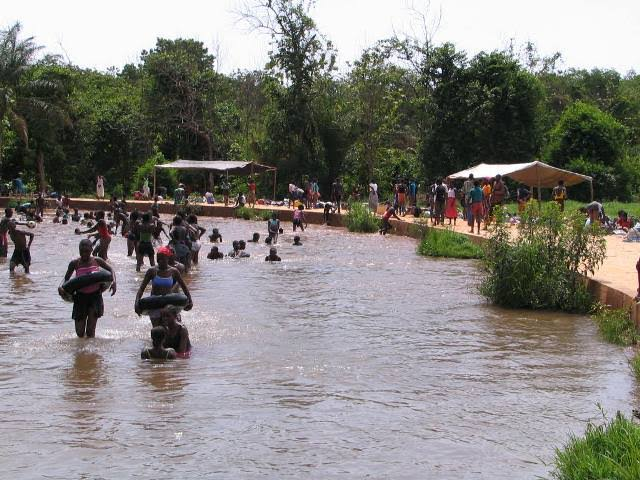

La Source Naturelle de la Guinguette

Le poumon vert de la région
La Guinguette est un site naturel exceptionnel situé à environ 15 kilomètres du centre-ville, au cœur de la forêt classée du Kou. C'est une résurgence d'eau douce qui coule au milieu d'une forêt-galerie très dense, offrant un contraste saisissant et bienfaiteur avec le climat environnant.
Un havre de fraîcheur et de loisirs
Avec ses eaux limpides et courantes qui restent fraîches toute l'année, la Guinguette est le lieu de détente et de baignade privilégié des habitants de Bobo-Dioulasso et des touristes. Les familles s'y retrouvent les week-ends pour pique-niquer à l'ombre des arbres géants et s'extraire de l'animation de la ville.
Importance écologique majeure
Au-delà de son attrait touristique, la Guinguette joue un rôle écologique capital. La pureté de sa source alimente une partie de la ville en eau potable et permet le développement d'une biodiversité végétale et animale remarquable. C'est un modèle d'éco-tourisme à préserver absolument.